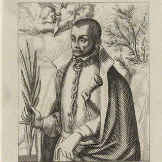

Isusovački blaženici
Svećenik
Bl. Rogerije Filcock
1570. – 1601.
Engleski svećenik Roger Filcock želio je ući u Družbu Isusovu. Nakon povratka u domovinu služio je katolicima, a izdaja ga je dovela u zatvor.
Tekst je preveden i prilagođen uz pomoć umjetne inteligencije.

Izvor slike
- Spomendan
- 27. veljače
- Zaštitništvo
- Nije navedeno u izvoru
- Životni vijek
- 1570. – 1601.
- Djelovanje
- Misije i evangelizacija · Duhovno vodstvo i razlučivanje · Progoni i progonstvo · Mučeništvo
- Razdoblje
- 16., 17. stoljeće
- Rođenje — dostupni podaci
- 1570.; dan i mjesec nisu potvrđeni u provjerenom izvoru.
- Mjesto rođenja
- Engleska
- Datum smrti
- 27.02.1601.
- Mjesto smrti/mučeništva
- Tyburn, London, Engleska
- Okolnosti smrti/mučeništva
- Pogubljen vješanjem i sakaćenjem zbog katoličkoga svećeništva i djelovanja za progona.
- Uloga
- Svećenik
- Mučenik
- Da
- Ostale oznake
- Mučenik engleskih protukatoličkih progona
- Pripadnost
- Isusovac
- Drugi oblici imena
- Roger Filcock · Roger
Životopis
Roger Filcock rođen je 1570. Studirao je u engleskome kolegiju u Reimsu, a zatim u Valladolidu. Želio je pristupiti Družbi Isusovoj, ali mu je preporučeno da najprije stekne iskustvo svećeničke službe u Engleskoj. Već na povratnome putu naišao je na opasnost: brod iz Bilbaa prema Calaisu zarobili su Nizozemci. Uspio je pobjeći i 1598. potajno se iskrcati u Kentu.
Obratio se poglavaru Henryju Garnetu i nakon vremena kušnje 1600. bio prihvaćen među isusovce. U Londonu je bio prijatelj i ispovjednik Anne Line, koja je pružala sklonište katoličkim svećenicima. Namjeravao je prijeći na europsko kopno radi novicijata, ali ga je izdao nekadašnji kolega iz Španjolske. Zatočen je u Newgateu. Kratko suđenje završilo je smrtnom osudom unatoč slabosti optužbe.
Dana 27. veljače 1601. odveden je na Tyburn s benediktincem Markom Barkworthom; istoga je dana pogubljena Anne Line. Dvojica su svećenika na putu i pred smrt podupirala jedan drugoga molitvom. Filcock je morao gledati Barkworthovo pogubljenje prije nego što je došao njegov red. Njihov zajednički spomen povezuje dvojicu svećenika različitih redovničkih zajednica i laikinju koja je omogućavala potajni sakramentalni život. Prijateljstvo s Anne i njezina služba skloništa ne mijenjaju Filcockov osobni put priprave za isusovački život.
Tekst je preveden i prilagođen uz pomoć umjetne inteligencije.
Pročitaj više na izvornoj stranici ↗